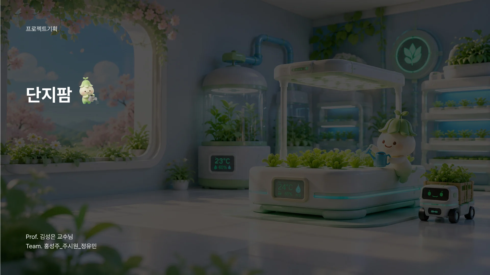

(05) 단지팜 / Case study← Index
단지팜팀 프로젝트2026
집에서 돌본 식물을 하남의 스마트팜에서 만나는 단지팜.

What I mean
(01) 해결할 문제
한 번 다녀오고 끝나는 체험
(02) 목표
수확을 다음 경험으로
What I make
(03) 핵심 개선
아이의 관찰과 보호자의 예약
(04) 배운 역량
지역 리서치가족 사용자 시나리오온오프라인 서비스정보구조 설계
(05) 문서
기획서 · 준비 중
(05) 단지팜 / Case study← Index
집에서 돌본 식물을 하남의 스마트팜에서 만나는 단지팜.

What I mean
(01) 해결할 문제
한 번 다녀오고 끝나는 체험
(02) 목표
수확을 다음 경험으로
What I make
(03) 핵심 개선
아이의 관찰과 보호자의 예약
(04) 배운 역량
(05) 문서